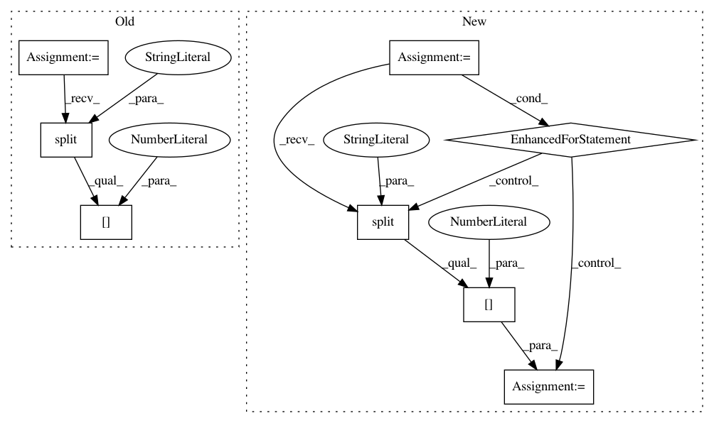

f2889ca90ddd60b19070b7e8fbcb0867ae4c47ed,setup.py,,,#,25
Before Change
gpu_available = len(out) > 0
// check python version
py3_ver = int(platform.python_version().split(".")[1])
// Tensorflow version (make sure CPU/MKL/GPU versions exist before changing)
tf_version = "1.12.0"
After Change
gpu_available = len(out) > 0
// Tensorflow version (make sure CPU/MKL/GPU versions exist before changing)
for r in install_requirements:
if r.startswith("tensorflow=="):
tf_version = r.split("==")[1]
// default TF is CPU
chosen_tf = "tensorflow=={}".format(tf_version)
// check system is linux for MKL/GPU backends
if "linux" in sys.platform:
system_type = "linux"
In pattern: SUPERPATTERN
Frequency: 3
Non-data size: 8
Instances
Project Name: NervanaSystems/nlp-architect
Commit Name: f2889ca90ddd60b19070b7e8fbcb0867ae4c47ed
Time: 2019-05-01
Author: peter.izsak@intel.com
File Name: setup.py
Class Name:
Method Name:
Project Name: NervanaSystems/coach
Commit Name: 619ea0944e1f652a426045038ee2977996733758
Time: 2019-01-02
Author: gouravr@amazon.com
File Name: rl_coach/architectures/tensorflow_components/savers.py
Class Name: GlobalVariableSaver
Method Name: restore
Project Name: NervanaSystems/coach
Commit Name: b1e9ea48d86807382c5feca0d18a6bf71f5caa03
Time: 2019-01-03
Author: gouravr@amazon.com
File Name: rl_coach/architectures/tensorflow_components/savers.py
Class Name: GlobalVariableSaver
Method Name: restore